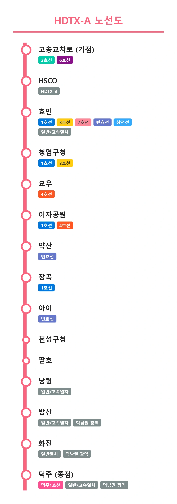

HDTX-A
|
|||
|
 HDTX-A 노선도
|
|||
| 노선 정보 | |||
|---|---|---|---|
| 노선 색상 | ■ 핑크색 (#FB637E) | ||
| 운영 기관 | 에이치디티엑스운영 (예정) | ||
| 상태 | 계획 중 | ||
| 개통 예정 | 2036년 이내 개통 목표 | ||
| 기점 | 고송교차로역 | ||
| 종점 | 덕주역 | ||
| 역 수 | 15개 | ||
| 시스템 | 광역급행철도 | ||
| 차량 | 중형 중전철 (고속형) | ||

1. 개요
"기존에 기차로 가기 불편했던 효빈 - 덕주 구간을 최단 시간으로 뚫어줄 거대한 대동맥"
현재 야심 차게 계획 및 추진 중인 덕빈권 광역급행철도 노선. 정식 명칭은 HDTX-A (Hyobin-Deokbin Train eXpress A)이다.
수도권의 GTX를 본따 만든 효빈판 버전으로 출발했으나, 오히려 이 사업을 관할하는 지자체들(효빈광역시, 덕빈북도, 덕빈남도)의 합산 체급과 어마어마한 구간 거리를 고려했을 때 스케일이나 투입 예산 면에서 원조를 뛰어넘을지도 모른다는 역대급 평가를 받고 있다. 특히 덕빈남도의 도청 소재지이자 핵심 도시인 덕주시와 거대 광역시인 효빈광역시를 30~40분대로 주파하는 것을 최우선 과제로 삼고 있으며, 2036년 이내 개통을 목표로 민자 사업이 활발히 기획되고 있다. 물론 이런 류의 초대형 철도 사업이 늘 그렇듯 개통일이 미뤄질 확률이 99.9%다. 2040년에 타도 다행이라는 소리가 나온다.
효빈광역시 북구의 심장부 고송교차로역을 기점으로 하여, 대규모 마이스(MICE) 단지인 HSCO와 초거대 환승 거점인 효빈역 등 주요 도심을 대심도로 무자비하게 관통한 뒤, 약산, 천주, 낭원, 방산을 거쳐 덕빈남도 덕주시까지 일직선으로 꽂아버리는 초대형 광역교통 메가 프로젝트다.
2. 특징
2.1. 대심도 터널과 압도적인 표정속도
복잡한 도심지 토지 보상 문제를 피하고 선형을 극한으로 직선화하기 위해, 효빈 시내 구간(고송교차로 ~ 이자공원)은 지하 40m 이상의 대심도 터널(TBM 공법)로 뚫고 지나간다. 덕분에 굽이치는 기존 도시철도들과 달리 거의 완벽한 일직선을 자랑하며, 표정속도를 무려 시속 100km 이상으로 끌어올릴 수 있게 설계되었다.
최고 영업속도는 180km/h에 달할 예정이며, 차량은 가감속 성능이 뛰어난 중형 중전철 규격의 고속형 전동차가 투입된다. 민자 사업자로 유력한 에이치디티엑스운영(주)이 노선의 전반적인 유지보수와 운영을 맡을 예정이다.
2.2. 완벽한 환승 네트워크
단순히 속도만 빠른 것이 아니라, 주요 결절점마다 환승을 욱여넣어 실효성을 극대화했다.
- 고송교차로역: 효빈 2호선과 6호선이 교차하는 북구 교통의 요지.
- 효빈역: 무려 5개 노선(1, 3, 7호선, 빈효선 광역전철, 창전선) 및 KTX/SRT 등 일반·고속열차와 다이렉트로 연계되는 초거대 메가 허브.
- 덕주역: 종점인 덕주역 역시 덕주1호선 및 덕남권 광역전철과 평면 환승 수준의 동선을 짤 계획이라, 웬만한 수도권 광역교통망 뺨치는 연계성을 자랑한다.
3. 기대효과 (효덕 메가시티의 완성)
- 효빈-덕주 간 심리적 거리 붕괴: 기존 무궁화호나 시외버스로 이동 시 1시간 30분~2시간이 훌쩍 넘게 걸리던 지루한 거리를 30분대 후반으로 파격 단축시킨다. 이는 사실상 방산시와 덕주시가 효빈광역시의 거대 위성도시화 내지는 '효덕 단일 메가시티 생활권'으로 묶이는 역사적인 결과를 낳을 것이다.
- 덕빈권 광역교통망의 완성: HDTX-A를 핵심 척추로 하여 기존 빈효선, 덕남권 광역철도 등이 유기적으로 연결되면서, 자가용 없이는 시·도 간 이동이 끔찍했던 덕빈남·북도 주민들의 이동권이 혁명적으로 개선된다.
- 도심 집중화 완화 및 지역 균형 발전: 효빈 시내 중심부에 지나치게 몰려있던 인구와 상권이 HDTX 역세권을 따라 약산, 천주, 방산 등으로 골고루 분산되며, 상대적으로 낙후되었던 외곽 거점 지역의 폭발적인 발전이 기대된다. 당장 마이스(MICE) 산업의 중심인 HSCO와 고송교차로 일대는 벌써부터 집값이 들썩이고 있다.
4. 역 목록


| 역번호 | 역명 | 로마자 역명 | 한자 역명 | 승강장 형태 | 위치 | 환승 노선 | 주소 | 비고 |
|---|---|---|---|---|---|---|---|---|
| HD101 | 고송교차로 | Gosong gyocharo | 高松交叉路 | 상대식(■││■) | 지하 5층 |
|
효빈광역시 북구 고송동 112-2 지하 | 기점 |
| HD102 | HSCO | HSCO | 孝彬展示場 | 상대식(■││■) | 지하 5층 |
|
효빈광역시 북구 생곡동 239 | |
| HD103 | 효빈 | Hyobin | 孝彬 | 쌍섬식(│■││■│) | 지하 6층 |
(예정) |
효빈광역시 동구 사가당동 1078 지하 | |
| HD104 | 청엽구청 | Cheongyeop District Office | 靑葉區廳 | 상대식(■││■) | 지하 5층 |
|
효빈광역시 청엽구 청엽동 9-3 지하 | |
| HD105 | 요우 | You | 曜雨 | 상대식(■││■) | 지하 3층 |
|
효빈광역시 탄성군 도변읍 요우리 4-17 지하 | |
| HD106 | 이자공원 | Ija Park | 梨子公園 | 상대식(■││■) | 지하 4층 |
|
효빈광역시 안천구 이자동 244 | |
| HD107 | 약산 | Yaksan | 藥山 | 상대식(■││■) | 지하 3층 |
|
덕빈북도 약산시 보녕동 842 | |
| HD108 | 장곡 | Janggok | 長谷 | 상대식(■││■) | 지하 2층 |
|
덕빈북도 약산시 장곡읍 장곡리 268 | |
| HD109 | 아이 | Ai | 啞異 | 상대식(■││■) | 지하 2층 |
|
덕빈북도 천주시 궁하구 아이동 5 | |
| HD110 | 천성구청 | Cheonseong District Office | 泉城區廳 | 상대식(■││■) | 지하 2층 | - | 덕빈북도 천주시 천성구 유동 | |
| HD111 | 팔호 | Palho | 八湖 | 상대식(■││■) | 지하 1층 | - | 덕빈북도 천주시 천성구 팔호동 | |
| ⬇ 덕빈선 공용 구간 (지상) ⬇ | ||||||||
| HD112 | 낭원 | Nangwon | 朗原 | 상대식(■││■) | 지상 1층 | 일반열차 고속열차 | 덕빈북도 낭원군 낭원읍 광전리 273-1 | |
| HD113 | 방산 | Bangsan | 方山 | 상대식(■││■) | 지상 1층 |
일반열차
고속열차
(예정) |
덕빈남도 방산시 청전동 513 | + 11.1km |
| HD114 | 화진 | Hwajin | 花津 | 상대식(■││■) | 지상 1층 |
일반열차
(예정) |
덕빈남도 덕주시 덕산구 화진동 312 | + 21.1km |
| HD115 | 덕주 | Deokju | 德州 | 쌍섬식(│■││■│) | 지상 1층 |
일반열차
고속열차
(예정) |
덕빈남도 덕주시 덕산구 중앙로 1 | 종점 (+ 25.8km) |
5. 여담 및 서브컬처 밈(Meme)
"효빈과 덕주를 잇는 거대한 광역급행, 그런데 어째서 색상부터 역 이름까지 죄다...?"
5.1. 사쿠라우치 리코 헌정 노선 논란(?)
HDTX-A선의 공식 노선 색상인 핑크색(#FB637E)은 공교롭게도 러브라이브! 선샤인!!의 등장인물 사쿠라우치 리코의 공식 이미지 컬러 헥사코드와 단 1의 오차도 없이 정확히 동일하다.[1]
여기서 끝났으면 철도청 디자이너의 단순한 우연 내지는 미적 취향이려니 하고 넘어갔겠지만, 하필이면 이 거대한 노선이 관통하는 주요 대심도 환승역 중 하나가 안천구 이자동에 위치한 이자공원역이라는 사실이 발굴되면서 논란(?)은 걷잡을 수 없이 커졌다. 한자 '이자(梨子)'는 일본어로 읽으면 다름 아닌 리코(りこ)가 되기 때문이다! 이쯤 되면 우연을 가장한 필연이다 심지어 바로 이전 역인 '요우(曜雨)'역 또한 한자 표기만 다르지 같은 작품의 찰떡 파트너인 와타나베 요우(曜)를 연상케 한다는 점도 한몫했다.
5.2. 덕업일치? 박효빈 시장의 사심 개입 의혹
설상가상으로 사쿠라우치 리코 본인이 아예 효빈광역시의 명예시민이자 '이자동 명예 동장'으로 위촉되어 있다는 팩트까지 겹쳐지며 의혹은 확신으로 변했다. 게다가 효빈광역시의 현직 수장인 박효빈(朴孝彬) 시장이 1996년생 남성으로, 학창 시절부터 서브컬처 문화(특히 러브라이브! 시리즈)를 꽤나 즐겼을 세대라는 점이 철도 갤러리와 서브컬처 팬덤 사이에서 발굴되었다.
결국 "시장의 강력한 덕업일치 사심이 들어간 수조 원대 국책사업이 아니냐"는 농담 반 진담 반의 밈이 일파만파 퍼졌다. 물론 효빈교통공사 및 관할 지자체 측에서는 "효빈의 세련됨과 덕주의 활력을 상징하는 컬러일 뿐, 특정 서브컬처와는 아무런 관련이 없다"고 땀을 뻘뻘 흘리며 해명 보도자료를 냈지만, 애초에 미아선(청엽선)이라는 엄청난 흑역사(?) 전례를 남긴 시청이기에 아무도 그 해명을 곧이곧대로 믿지 않고 있다.
5.3. 부동산 폭등과 지역 사회의 반응
이러한 서브컬처 밈적인 요소와는 별개로, 현실에서의 파급력은 어마어마하다. HDTX-A 노선의 기점인 고송교차로역 일대와 거대 전시장이 있는 HSCO 주변은 계획 발표 직후부터 이른바 'HDTX 대형 호재'를 업고 아파트 호가가 수억 원씩 뛰는 기염을 토했다. 반면 낭원~덕주 구간은 기존 덕빈선 일반철도 선로를 공용하기 때문에 "배차 간격이 꼬이거나 선로 용량이 포화되는 것 아니냐"는 철도 동호인들의 날 선 지적이 끊이지 않고 있다.
5.4. 혐덕 단체의 반발과 무자비한 응징 예고
한편, 이 소식을 접한 일부 혐덕(반 서브컬처) 성향의 보수 단체나 이익집단들이 "어떻게 막대한 혈세가 들어가는 국가 인프라 국책사업에 특정 일본 애니메이션 캐릭터의 색상을 칠할 수 있느냐", "당장 노선 색상을 엄숙한 색으로 바꾸지 않으면 깽판을 치겠다"며 시청 앞에서 실력 행사를 예고하는 등 반발할 조짐을 보이기도 했다.
하지만 이에 대해 대다수의 일반 시민들과 철도 동호인들은 "오히려 화사하고 노선도에서 눈에 확 띄어서 다들 좋다고 하는데 굳이 왜 생트집이냐"며 매우 싸늘한 반응을 보이고 있다. 무엇보다도 그동안 서브컬처에 진심이었던 박효빈 시장의 평소 불도저 같은 행보를 고려했을 때, 만약 이들이 선을 넘고 시위나 깽판을 강행할 경우 자비 없는 행정적, 법적, 물리적 물리치료(공권력 응징)가 가해질 가능성이 99.9%라는 것이 정배로 통한다. 감히 시장님의 원대한 덕업일치 메가 프로젝트에 태클을 걸다니 효빈시에서 살아남기 싫은 모양이다
6. 관련 문서
7. 각주
- 우연의 일치라고 치기에는 노선이 관통하는 지역(이자동)과 명칭이 너무 정확하게 들어맞아 팬덤의 확신을 낳았다. [이동]